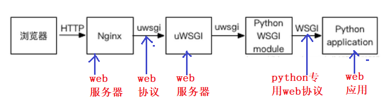

本文详细叙述了前端基于微信小程序，后端基于Django框架的web项目部署过程。
引言 小程序开发已经衍化出了一套十分固定的流程，而腾讯也希望开发者们在未经上线（商用化）前，只在本地调试，为了安全性设置了必须拥有合法域名才能上线的硬性要求。而作为学生项目而言，想要免费体验在服务器上部署后端，用前端访问的完整流程，小程序显然并不是特别适合。为了不购买域名，将Nginx部署在本地进行“前向代理”就成了折中之法。
而Nginx作为一款高并发web服务器，也能显著改善使用Django框架项目的处理效能。由于Django的内置web服务器并不能和Nginx合用，所以需要另一款web服务器作为Django和Nginx的桥梁，uWSGI作为一款支持WSGI传输协议且能和Nginx交互的web服务器，自然就成了不二之选。
以下是工作原理：

硬件准备 一台代理机（本地），配置为AMD R7 5800H，8核心16线程，内存32G，Deepin 20.06。
两台华为云服务器，2vGPU，Intel Skylake架构，内存4G，Centos 7.6。
服务器环境配置 基本包安装 1 2 3 # 主要安装一些基本包，防止后面python编译漏模块 $ yum update -y $ yum -y install gcc gcc-c++ zlib-devel bzip2-devel ncurses-devel sqlite-devel readline-devel tk-devel libffi-devel expat-devel gdbm-devel make openssl openssl-devel
手动安装Python3.9 由于采用高版本Django，所以需要3.9的python，由于yum库的维护一言难尽，所以选择自己手动安装。
1 2 3 4 5 6 7 8 9 10 11 12 13 14 15 16 17 18 19 # 从官网下载好源码包后 $ tar -xf Python-3.9.0.tar $ cd Python-3.9.0$ ./configure --prefix=/usr/local/python3.9 # 编译并安装 altinstall 不自动创建链接，需要手动创建，建议使用，保障多个版本共存。 $ make -j4 && make altinsatll $ make clean $ make distclean # 建立软链接变相实现别名效果 $ ln -s /usr/local/python3.9/bin/python3.9 /usr/local/bin/$ ln -s /usr/local/python3.9/bin/pip3.9 /usr/local/bin/pip# pip换源 $ mkdir ~/.pip$ vim ~/.pip/pip.conf [global] timeout = 6000 index-url = https://pypi.douban.com/simple trusted-host = pypi.douban.com
快速安装uWSGI 1 2 3 $ pip install uwsgi $ vim ~/.bashrc alias uwsgi=/usr/local/python3.9/bin/uwsgi
安裝MySQL服务 1 2 3 4 # 下载并安装MySQL官方的Yum Repository $ wget -i -c http://dev.mysql.com/get/mysql57-community-release-el7-10.noarch.rpm $ yum -y install mysql57-community-release-el7-10.noarch.rpm $ yum -y install mysql-community-server --nogpgcheck
安装好后只需要在其中一台服务器上创建schema即可，其余服务器只需安装MySQL服务，通过远程连接到一台中即可，实际情况下购买的服务器大概率在同一个子网中，内网传输速度很快。
1 2 3 4 5 6 7 8 9 10 11 12 13 # 配置MySQL $ systemctl start mysqld.service # 从日志中抓取初始密码 $ grep "password" /var/log/mysqld.log # 输入密码进入数据库 $ mysql -uroot -p mysql> ALTER USER 'root' @'localhost' IDENTIFIED BY 'new password' ; # 设置远程登录访问限制,注意：下面命令开启的IP是 192.168.0.1，如要开启所有的，用%代替IP): mysql> grant all privileges on *.* to 'root' @'192.168.0.1' identified by 'password' with grant option; mysql> flush privileges; mysql> exit
配置Django环境 1 2 3 4 5 6 7 8 $ pip install django==3.2 $ pip install djangorestframework==3.13.1 $ pip install pandas $ pip install Pillow $ pip install datedays $ pip install pymysql $ yum install mysql-devel --nogpgcheck $ pip install mysqlclient
在项目的settings.py中作如下两个模块的设置:
1 2 3 DEBUG = False ALLOWED_HOSTS = ['*' ]
1 2 3 4 5 6 7 8 9 10 11 12 DATABASES = { 'default' :{ 'ENGINE' :'django.db.backends.mysql' , 'NAME' :'shucovid' , 'USER' :'root' , 'PASSWORD' :'*******' , 'HOST' :'127.0.0.1' , 'POST' :'3306' } }
1 2 3 4 5 6 7 8 9 10 11 12 # 其他分支节点 DATABASES = { 'default':{ 'ENGINE':'django.db.backends.mysql', 'NAME':'shucovid', 'USER':'root', 'PASSWORD':'*******', 'HOST':'数据库所在服务器内网ip', 'POST':'3306' } }
配置好后在数据库所在服务器项目目录下执行：
1 2 $ python manage.py makemigrations $ python manage.py migrate
在所有服务器项目目录下执行以下命令测试项目是否能够正常运行：
1 2 # 即只采用Django内置web服务器做测试 $ python manage.py runserver
服务器安全组配置
如上开放一些常用端口，9001端口为Nginx和uWSGI进行Socket通信的端口，3306为MySQL服务，22位ssh，80为Http。
本机环境配置 前端安装 微信小程序开发工具安装即可
Nginx安装 1 2 # 由于本机是基于Debian的Deepin系统，apt较为强大，采取直接安装的方法 $ sudo apt install Nginx
安装完后发现已经自动添加环境变量，可直接使用命令Nginx。
* Navicat安装 1 2 3 4 5 6 7 8 9 10 11 12 13 14 15 16 17 18 19 20 21 22 23 24 25 26 27 28 29 30 31 32 33 34 35 36 37 38 39 40 41 42 # 采用打包方法破解Navicat15 $ wget https://download.navicat.com.cn/download/navicat15-premium-cs.AppImage $ mkdir navicat15-premium-cs$ sudo mount -o loop navicat15-premium-cs.AppImage navicat15-premium-cs $ cp -r navicat15-premium-cs navicat15-premium-cs-bak$ sudo umount navicat15-premium-cs $ rm -rf navicat15-premium-cs# 安装依赖 $ sudo apt install libcapstone-dev cmake rapidjson-dev openssl git # 安装keystone $ git clone https://github.com/keystone-engine/keystone.git $ cd keystone$ mkdir build$ cd build$ ../make-share.sh $ sudo make install $ sudo ldconfig # 安装navicat-keygen $ git clone -b linux --single-branch https://gitee.com/andisolo/navicat-keygen.git $ cd navicat-keygen$ make all # 通过navicat-patcher命令来修改原公钥 $ ./bin/navicat-patcher ../navicat15-premium-cs-bak/ # 下载打包工具 $ wget https://github.com/AppImage/AppImageKit/releases/download/continuous/appimagetool-x86_64.AppImage $ chmod +x appimagetool-x86_64.AppImage# 打包成新的app $ ./appimagetool-x86_64.AppImage navicat15-premium-cs-bak/ navicat15-premium-cs-2.AppImage # 运行新的app $ sudo chmod +x ~/Desktop/navicat15-premium-cs-2.AppImage $ ./navicat15-premium-cs-2.AppImag # 注册，使用 navicat-keygen 来生成序列号和JH码 $ cd navicat-keygen$ ./bin/navicat-keygen --text ./RegPrivateKey.pem
按提示选择Navicat产品类别（1.Premium）、Navicat语言版本（1.）和填写主版本号（15），随后生成一个序列号，输入用户名和组织，出现Input request code in Base64: (Double press ENTER to end) 保留界面。
断开网络，输入上一步生成的Serial number，点击激活，提示激活失败,选择手动激活。
复制请求码到之前的界面。
回车两次生成激活码。
复制navicat-keygen生成的激活码,在软件对话框里的激活码输入框里输入激活码完成激活。
部署Nginx+uWSGI+Django负载均衡策略 本机Nginx配置文件更改 1 2 3 4 5 6 7 8 9 10 11 12 13 14 15 16 # 选择增量式添加 $ cd /etc/nginx/sites-available$ vim django.conf upstream django{ server 124.71.202.87:9001;#nginx socket uwsgi server 124.71.201.76:9001;#两个服务器的公网ip，端口用于和服务器上uWSGI进行socket通信 } server{ listen 80; server_name 127.0.0.1;#这两行表明Nginx监听本地80端口，也是前端需要访问的端口 charset utf-8; location / { uwsgi_pass django;#表明将动态请求转发给uWSGI服务器处理 include /etc/nginx/uwsgi_params;#传递固定参数 } }
安装好后建立软链接
1 2 $ sudo ln -s /etc/nginx/sites-available/django.conf /etc/nginx/sites-enabled/django.conf $ sudo Nginx -s reload
如果要使用负载均衡策略，共有如下几种可供选择:
1 2 3 4 5 6 7 8 9 10 11 12 13 14 15 16 17 18 19 20 21 22 # 默认：轮询 upstream django{ server 124.71.202.87:9001; server 124.71.201.76:9001; } # iphash，基于ip的负载均衡 upstream django{ ip_hash; server 124.71.202.87:9001; server 124.71.201.76:9001; } # 权重轮询 upstream django{ server 124.71.202.87:9001 weight=1; server 124.71.201.76:9001 weight=2; } # 最小连接数 upstream django{ least_conn; server 124.71.202.87:9001; server 124.71.201.76:9001; }
大致物理结构如下：
服务器uWSGI配置文件更改 个人习惯在Django项目文件夹下添加uWSGI配置文件。
1 2 3 4 5 6 7 8 9 10 11 12 13 14 15 16 17 18 19 20 21 22 23 $ vim uwsgi.ini [uwsgi] # uwsgi服务器访问地址,为当前服务器内网地址：124.71.201.76->192.168.0.140 http = 192.168.0.140:9000 server # uwsgi和nginx通信的port，为当前服务器内网地址 socket=192.168.0.140:9001 # 项目所在目录 chdir=/home/configurations/backend # 基于项目目录的相对路径 wsgi-file=backend/wsgi.py # worker进程最大数 processes=2 # 每个进程最大线程数 threads=1 # 监控 stats=192.168.0.140:9002 vacuum=true # 进程文件存放路径，可快捷开关 pidfile=/home/configurations/backend/uwsgi.pid # 后台启动模式，日志文件 daemonize=/home/configurations/backend/uwsgi.log
启动！ 将以上文件设置好后即可打开MySQL服务，运行Nginx和uWSGI服务器，后端就部署完毕了。
1 2 3 4 5 6 # uWSGI命令 $ uwsgi --ini uwsgi.ini $ uwsgi --stop uwsgi.pid $ uwsgi --reload uwsgi.pid
1 2 3 4 5 6 7 8 9 10 11 12 13 14 # Nginx命令 $ sudo service nginx start $ sudo service nginx stop $ sudo service nginx restart $ sudo nginx -s reload $ sudo nginx -s quit $ sudo nginx -s term $ sudo nginx -s reopen
1 2 3 4 # MySQL启动命令 $ systemctl start mysqld.service # 检查MySQL运行状态 $ systemctl status mysqld.service
借鉴以下优秀blog： https://www.cnblogs.com/dayongge/p/13493167.html
https://www.cnblogs.com/navysummer/p/16263742.html
https://www.jianshu.com/p/2130b6a6a397
https://blog.csdn.net/qq_36582604/article/details/80526287
https://blog.csdn.net/weixin_42575601/article/details/125805728
https://blog.csdn.net/shijin741231/article/details/110196975
如果您喜欢此博客或发现它对您有用，则欢迎对此发表评论。 也欢迎您共享此博客，以便更多人可以参与。 如果博客中使用的图像侵犯了您的版权，请与作者联系以将其删除。 谢谢 ！